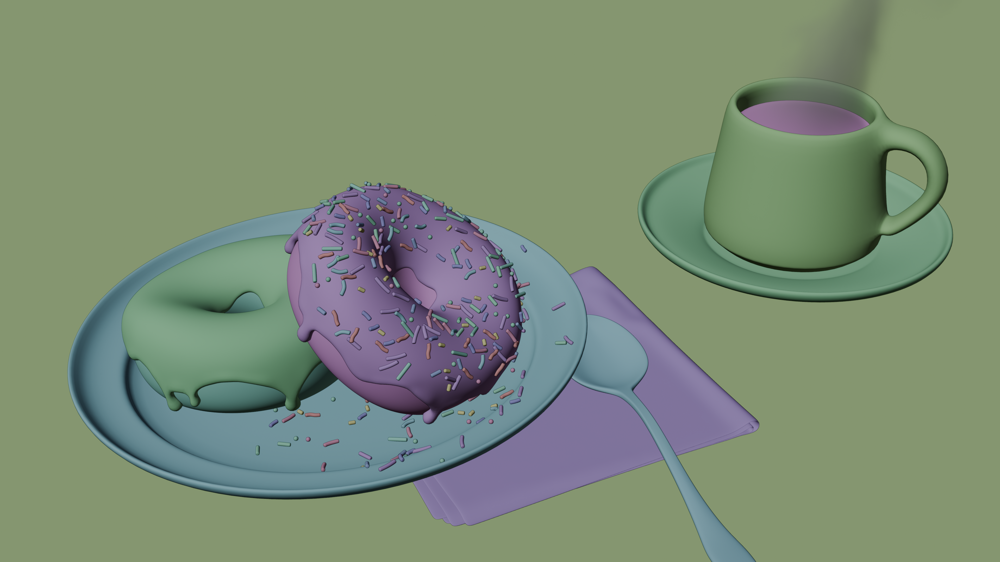

Pause Café
Avril 2026
Blender


Dans l'objectif de renforcer ma maîtrise de Blender, j'ai choisi de suivre le fameux tutoriel du donut de Blender Guru, tout en ajoutant ma touche personnelle.
Afin d'ajouter une serviette, je l'ai d'abord modélisé à la main, et me suis ensuite tourné vers une simulation physique pour un bien meilleur rendu et un pliage naturel.
La simulation m'a posé problème car le modèle se contractait sur lui-même ; cela était dû à l'échelle de la scène trop réduite. Après l'avoir agrandie, j'ai fais un bake du modèle puis l'ai inséré.
J'ai choisi et modifié la plupart des textures sur l'add-on BlenderKit, comme pour la nappe et la tasse.
Ce travail m'a confronté à de nombreux défis techniques, dont certains surmontés à l'aide de serveurs Discord. Cela m'a permis d'explorer chaque partie d'un projet 3D, comme le sculpting, le shading et l'UV editing.